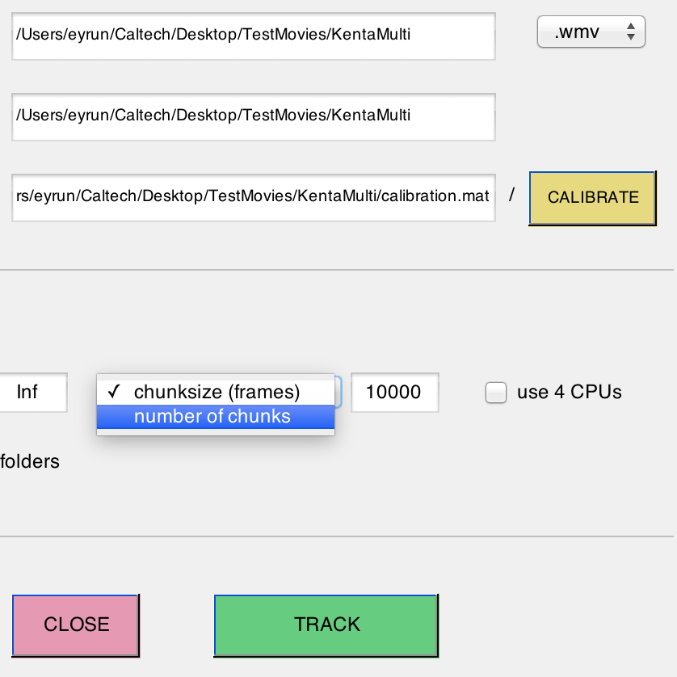
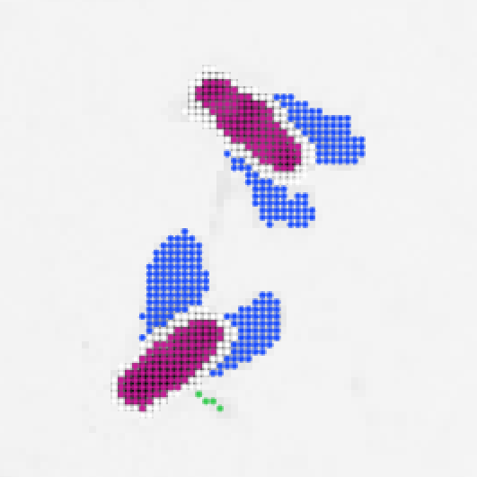
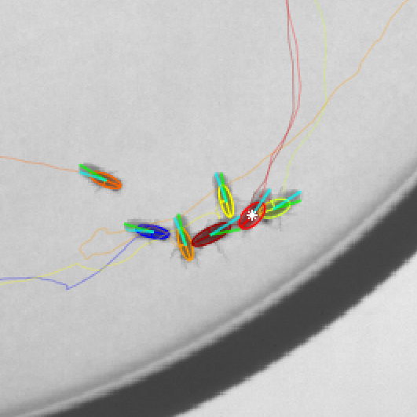

Requirements:
64-bit OS X, Windows, or Linux. Matlab R2013b or later (with Image Processing and Statistics toolboxes).
Quick start:
>> tracker
>> visualizer
Interface details:
| Tracker | Calibrator | Visualizer | Running tracker without interface |
Input and output format: See documentation.
If you have questions check out the FAQ or post your question to the google group.